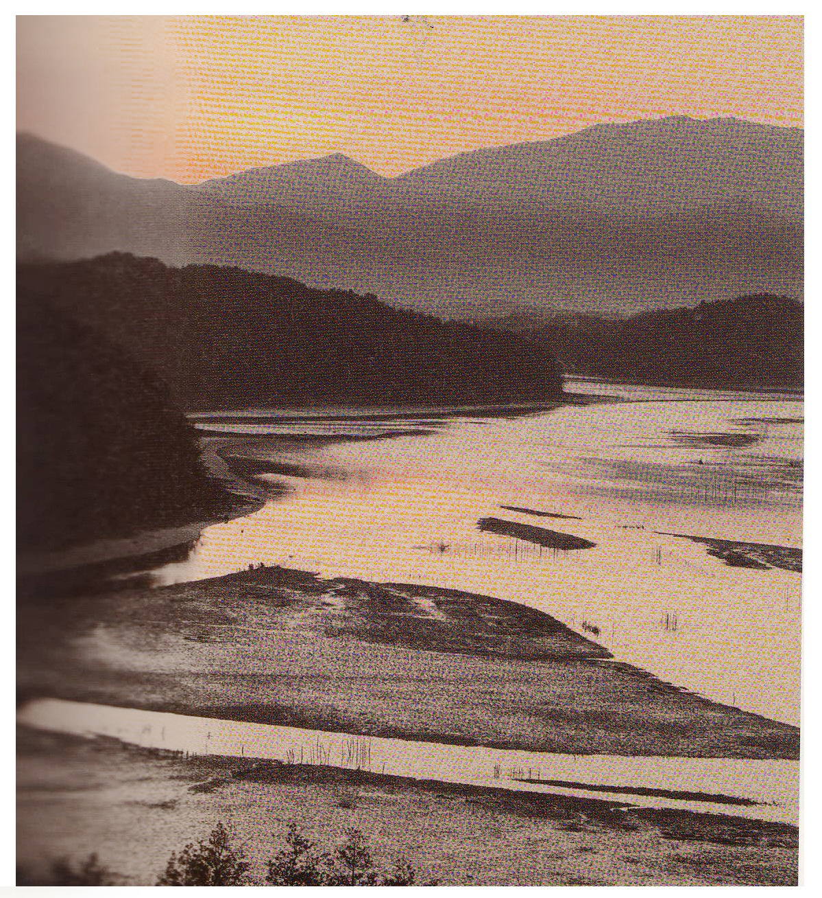
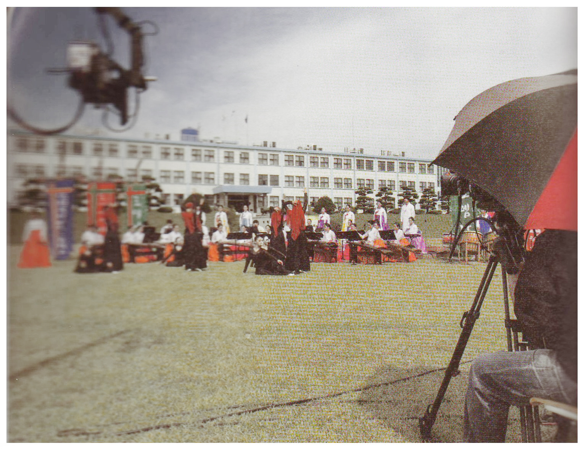
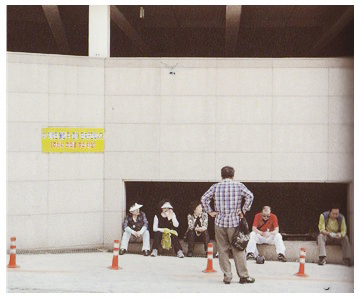
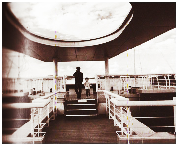

사진에서 직선 원근법은(linear perspective) 혹은 선형 원근법은 카메라 밖의 실제 세계에 존재하는 평행선들을 사진 속의 평면 속으로 모아지도록 촬영해서 보는 이에게 깊이감을 제공한다. 전경에 있는 피사체를 배경에 있는 다른 요소들에 비해 압도적으로 크게 드러날 수 있도록 구성하면, 그 크기의 차이에 의해서 원근감이 부각된다. 엄청나게 큰 나무도 멀리 떨어진 아파트 꼭대기에서 바라보면 너무도 작게 보일 수밖에 없다. 이러한 원리를 이해하고 있는 사람이라면 누구나 사진에서 직선 원근법을 잘 활용할 수 있다. 피사체 간의 거리감을 잘 활용하면 사진 속에 깊이감을 더 할 수 있다.
예를 들어 기찻길이나 계단, 혹은 아래에서 내려다 본 높은 건물 등이 원경에 있는 한 지점으로 수렴되도록 수직선을 적절히 촬영하면 지선 원근법이 돋보이는 사진이 만들어진다. 특히 이런 사진은 보는 사람의 시선을 사진 속으로 빨아들이는 환영을 만들어 낸다.
많은 사진가들은 광각렌즈를 활용하여 가까운 곳에 있는 물체를 강조해 이러한 수렴 효과와 원근감을 극대화 한다. 흔히 ‘압도적인 전경과 설명적인 배경’이라고 이야기되는 프레이밍 방식은 앞에 있는 주요 피사체를 강조하면서도 전체적인 환경을 동시에 보여주기 위해 빈번하게 사용된다.
사진 39 경남 사천 : 2012
망원렌즈는 원근금을 축소해 마치 섬들이 빼곡하게 들어선 것처럼 보이도록 겅조할 수 있다. 망원렌즈를 활용해 갯벌, 작은산, 바다가 층층이 겹쳐서 보이는 대기 원근법을 보여 준다.
대기 원근법으로 연출에 깊이 더하기대기 원근법(aerial perspective)은 배경에 있는 모든 물체들이 늘어서 있게 보이도록 만드는 사진 테크닉 용어다. 안개가 잔뜩 낀 날씨에 산들이 겹겹이 늘어서 있는 풍경을 망원렌즈를 활용해 촬영하면 각 산들의 원근감이 강조되어 표현될 수 있다.
대기 원근법은 카메라에 가까운 대상을 원경에 있는 피사체보다 더 어둡도록 연출해 깊이를 더해주는 방식이다.
망원렌즈를 사용하여 산을 찍으면, 마치 산이 빼곡하게 들어선 것처럼 표현할 수 있다. 안개가 낀 날 약간 추운 겨울이 대기 원근법을 제대로 활용할 수 잇는 최적의 날씨이긴 하지만. 다른 계절에도 비슷한 효과를 만들어 낼 수 있다. ( 사진 39 ) 는 마원렌즈를 활용해 갯벌, 작은 산, 바다가 층층이 겹쳐서 보이는 대기 원근법을 보여준다.
(사진 40) 은 앞부분에 있는 건물 벽이 섀도에 묻혀서 어둡고 배경으로 갈수록 점점 밝아진다. 중첩되는 건물사이로 다른 건물들이 배치되어 상대적으로 아주 작은 크기로 보인다. 이런 효과로 인해 우리 눈은 자연스럽게 각 건물들의 위치가 거리에 따라 배치되었음을 알 수 있고. 근경에서부터 원경으로 이어지는 시각적 흐름을 맛볼 수 있다.

사진 40 일본 아키타 : 2012
앞부분에 있는 건물벽이 새도에 묻혀서 어둡고 원경으로 갈수록 점점 밝아진다. 중첩되는 건물사이로 또다른 건물들이 배치되어 상대적으로 아주 작은 크기로 보인다.
컬러 원근법으로 깊이감 주기컬러 원근법(color perspective)은 색상이나 톤의 차이에 만들어지는 깊이를 의미한다.
거리가 멀리 떨어진 물체는 근거리에 있는 물체보다 더 작게 보인다. 그리하여 윤곽선이 흐리게 나타나고, 근거리 물체와의 차이에 의해 원근감이 만들어진다.
컬러 원근법을 잘 익히기 위해서는 많은 테스트가 필요하다. 일절한 장소를 선택해서 하루 중 다른 시간대 별로, 다른 기상 조건에서 촬영거리를 달리해 여러 차례 테스트를 해본 후에 그 결과를 비교해야 한다. 이때 테스트 촬영거리는 근경, 중경, 원경 정도의 다소 넓은 범위로 구분해 촬영한다. 이렇게 해서 만들어진 결과물을 분석하여 자신이 원하는 색상과 원근감을 표현할 수 있는 방법을 선택할 수 있다.

사진 41 경남 진주 : 2012
같은 하늘이라도 물에 비친 하늘의 색상은 훨씬 더 강렬하고 원거리에 있는 하늘은 상대적으로 밝다. 이런 이유로 흐릿한 색상의 원거리는 실제보다 더 멀리 떨어진 것처럼 보인다. 이것이 컬러 원근법의 원리다.
전경을 활용한 원근감의 강조전경에 있는 물체의 형태나 방향 그리고 다양한 원근법의 원리를 잘 활용하면 사진의 깊이감을 더할 수 있다.
독자나 관객은 사진가가 정해주는 대로 전경에 있는 피사체를 먼저 보고, 그 피사체가 지시하는 방향을 따라서 프레임 안으로 시선을 돌리게 된다. 의도적으로 전경에 있는 피사체가 지시하는 방향에 맞추어 주제의 위치를 설정하는 것이다. 따라서 앞에 있는 피사체가 어디를 가리키느냐가 이 구성의 관건이다.
( 사진42 )에서 오른쪽의 카메라맨과 지미집 카메라는 가운데의 공연장을 향하고 있다. 따라서 우리의 시선은 자연스럽게 카메라가 지시하는 방향인 가운데로 이동한다. 사진을 보는 사람의 시선을 근경으로부터 프레임 가운데 있는 원경의 주제로 향하도록 유도하는 원감이 형성된다.
사진 42 전남 남원 : 2012
우리의 시선은 자연스럽게 카메라가 지시하는 방향을 따라서 화면 가운데로 이동한다. 사진을 보는 사람의 시선을 근경으로 부터 프레임 가운데 ㅇㅆ는 원경의 주제로 향하도록 유도하는 원근감이 형성딘다.
역발상 : 평면의 상하 레이어를 이용하자때로는 상하로 단층을 이루는 소재를 찾아서 촬영해도 원근감을 나타내는 재미있는 장면을 연출할 수 있다.
( 사진43 )은 평면적인 단층을 보여주는 사진으로, 2층으로 된 주차장 건물이 상하의 단층을 잘 활용했다. 도로와 뒷짐 진 남자, 도로안전 시설물, 그리고 사람들과 건물에 이르는 레이어를 가지고 있지만 그 깊ㅍ이가 두드러지게 나타나지 않는다. 평면적인 대상을 촬영할 때 상하의 레이어를 활용함으로써 좀 더 재미있는 효과를 만들어 내고 있다.
사진 43 울릉도 : 2011
평면적인 단층을 보여주는 사진이지만 2층으로 된 주차장 건물의 상하의 단층을 활용했다. 두드러지지 않은 원근감을 상하의 레이어를 더함으로써 좀더 재미 있게 만들어 낼 수 있었다.
사진 44 경북 울진 : 2010
상하의 전통작인 원근감을 동시에 활용함으로써 더 극적이고 재미 있는 사진을 만들어낸 경우다. 특히 위의 구조물 사이로 보이는 하늘이 이 사진에서 가장 중요한 포인트다.
[참고문헌]
[1] 원하는 사진을 어떻게 찍는가, 김성민, 소울메이트, 2015. 2. 9. p130
....
....
....
....
....
....
....